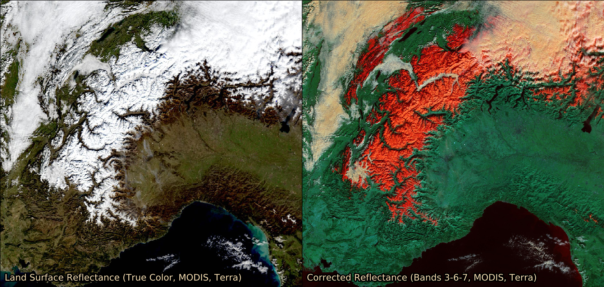

Note
Click here to download the full example code
Web Map Tile Service time dimension demonstration¶
This example further demonstrates WMTS support within cartopy. Optional keyword arguments can be supplied to the OGC WMTS ‘gettile’ method. This allows for the specification of the ‘time’ dimension for a WMTS layer which supports it.
The example shows satellite imagery retrieved from NASA’s Global Imagery Browse Services for 5th Feb 2016. A true color MODIS image is shown on the left, with the MODIS false color ‘snow RGB’ shown on the right.
import matplotlib.pyplot as plt
import matplotlib.patheffects as PathEffects
from owslib.wmts import WebMapTileService
import cartopy.crs as ccrs
def main():
# URL of NASA GIBS
URL = 'http://gibs.earthdata.nasa.gov/wmts/epsg4326/best/wmts.cgi'
wmts = WebMapTileService(URL)
# Layers for MODIS true color and snow RGB
layers = ['MODIS_Terra_SurfaceReflectance_Bands143',
'MODIS_Terra_CorrectedReflectance_Bands367']
date_str = '2016-02-05'
# Plot setup
plot_CRS = ccrs.Mercator()
geodetic_CRS = ccrs.Geodetic()
x0, y0 = plot_CRS.transform_point(4.6, 43.1, geodetic_CRS)
x1, y1 = plot_CRS.transform_point(11.0, 47.4, geodetic_CRS)
ysize = 8
xsize = 2 * ysize * (x1 - x0) / (y1 - y0)
fig = plt.figure(figsize=(xsize, ysize), dpi=100)
for layer, offset in zip(layers, [0, 0.5]):
ax = fig.add_axes([offset, 0, 0.5, 1], projection=plot_CRS)
ax.set_xlim((x0, x1))
ax.set_ylim((y0, y1))
ax.add_wmts(wmts, layer, wmts_kwargs={'time': date_str})
txt = ax.text(4.7, 43.2, wmts[layer].title, fontsize=18, color='wheat',
transform=geodetic_CRS)
txt.set_path_effects([PathEffects.withStroke(linewidth=5,
foreground='black')])
plt.show()
if __name__ == '__main__':
main()
Total running time of the script: ( 0 minutes 1.999 seconds)